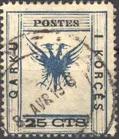
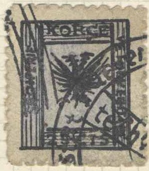

Return To Catalogue - Albania 1913-1915 - Albania 1916-1919 - Albania 1920 onwards
Note: on my website many of the
pictures can not be seen! They are of course present in the
catalogue;
contact me if you want to purchase the catalogue.
This area is full with forgeries and detection is a field for specialists. I've tried to separate forgeries and genuine stamps, but I'm not 100 % sure is this is done correctly. If anybody has more information, please contact me!
Inscription 'SHQIPERIE VETQEVERITARE'
1 c brown and green 2 c brown and green 3 c brown and green 5 c green and black 10 c brown and black 25 c blue and black 50 c lilac and black 1 F brown and black
Value of the stamps |
|||
vc = very common c = common * = not so common ** = uncommon |
*** = very uncommon R = rare RR = very rare RRR = extremely rare |
||
| Value | Unused | Used | Remarks |
| 1 c | R | R | |
| 2 c | RR | R | |
| 3 c | RR | R | |
| 5 c | *** | *** | |
| 10 c | *** | *** | |
| 25 c | *** | *** | |
| 50 c | *** | *** | |
| 1 F | *** | *** | |
Inscription 'REPUBLIKA SHQIPETARE'

1 c brown and green 2 c brown and green 3 c brown and green 5 c green and black 10 c brown and black 50 c lilac and black 1 F brown and black
Value of the stamps |
|||
vc = very common c = common * = not so common ** = uncommon |
*** = very uncommon R = rare RR = very rare RRR = extremely rare |
||
| Value | Unused | Used | Remarks |
| 1 c | * | * | |
| 2 c | * | * | |
| 3 c | * | * | |
| 5 c | ** | ** | |
| 10 c | *** | *** | |
| 50 c | *** | *** | |
| 1 F | R | *** | |
Overprinted 'QARKU I KORCES' (in red) and value


Two totally different overprint types (probably both forged)
25 on 5 c green and black
Value of the stamps |
|||
vc = very common c = common * = not so common ** = uncommon |
*** = very uncommon R = rare RR = very rare RRR = extremely rare |
||
| Value | Unused | Used | Remarks |
| 25 on 5 c | RR | RR | |
Inscription 'QARKU I KORCES'

25 c blue and blck
Value of the stamps |
|||
vc = very common c = common * = not so common ** = uncommon |
*** = very uncommon R = rare RR = very rare RRR = extremely rare |
||
| Value | Unused | Used | Remarks |
| 25 c | R | *** | |
There are 12 genuine types of these stamps, according to http://www.tughranet.f2s.com/stamps/aps/albania.htm, the following stamps could be genuine (by comparing the shape of the eagle with the images on this page, but I'm not 100% sure that all the stamps are genuine):

Type 1


Type 2
Type 3

Type 5
Type 6

Type 7
Type 9


Type 10
I've seen stamps with wide and short 'KORCE' inscription on top. I'm not sure if all of them are genuine.

Forgery, type 1


Forgery, type 2

Forgery, type 7


Highly dubious items
Misprints (or forgeries? 2 CTM and 3 CTM):
Many forgeries exist of these stamps (about 50 types according to 'Focus on forgeries'!). There are 12 types of these stamps. 'Focus on forgeries' says in the genuine stamps, the eagle is always more or less surrounded by small dots or lines (depending on the type). In the genuine stamps the value indication for the 1 c is 'CTM' and not 'CTS'. More information can also be found at: http://www.tughranet.f2s.com/stamps/aps/albania.htm.

(Forgeries with inscription '1 CTS' instead of '1 CTM')

Other forgery of the 'QARKU KORCES' surcharged stamp
Some other highly dubious items, not the many 'tentacles' at the
feet of the eagle (reduced sizes)
(Block of 10 stamps, probably forgeries, reduced sizes)
Another block with most likely forgeries made by the same forger
as the sheet shown above

Forgery in a much smaller size than the genuine stamps.
Very dubious item with six 5 c stamps, the black inscription is
missing on the bottom two stamps.
Another very dubious item, with two 50 c stamp, imperforate in
between. The right stamp has exactly the same shape of eagle as
the right hand side stamps in the block of six stamps shown
above.

{kind=link}
{kind=link}